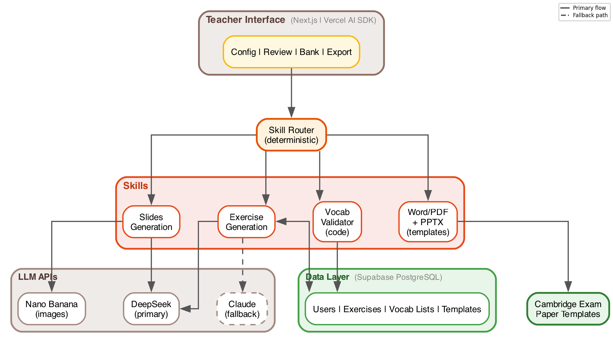
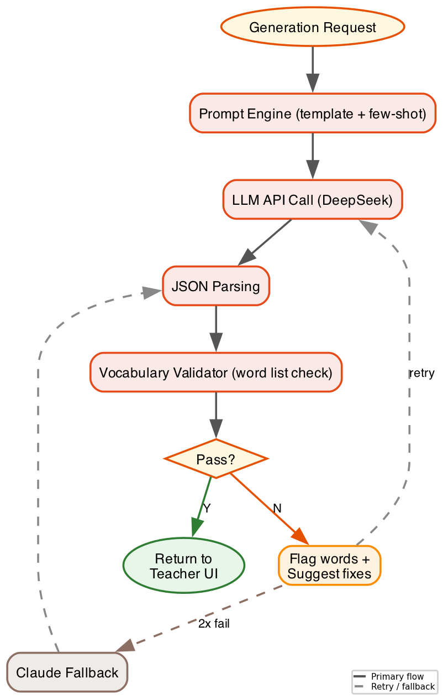
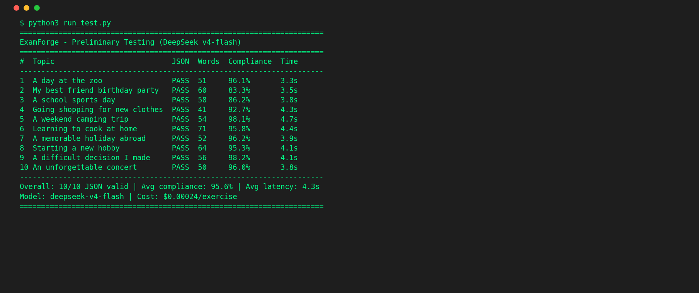

COMP4299 Final Year Project
for Cambridge KET/PET English Education
Chen Zeming (P2323553) · Supervisor: Philip Lei · 9 June 2026
The Problem
Project Objectives
Related Work
| System | Exam Format | Vocab Control | Multimodal | Teacher Review | Export |
|---|---|---|---|---|---|
| RCEG [3] | ✗ | ✗ | ✗ | ✗ | ✗ |
| LangLingual [4] | ✗ | Partial | ✗ | ✗ | ✗ |
| LearnLens [6] | N/A | N/A | ✗ | ✓ | ✗ |
| Vannatta [11] | ✓ | ✗ | ✗ | ✓ | ✗ |
| This Project | ✓ | ✓ | ✓ | ✓ | ✓ |
Key insight from [2]: non-experts cannot write effective prompts → need abstraction.
Key insight from [10]: LLMs fail to stay within CEFR levels → need post-generation validation.
The Solution
Single-agent system with deterministic routing. Teachers review and approve before anything reaches students.
System Architecture

Prompt Engineering
Key finding: LLMs cannot self-validate. They report compliance even when violations exist.
Discovery: "Constraint Drift"
Model satisfies structural constraints (correct JSON, right length) but subtly violates pedagogical constraints (B1 vocabulary in A2 exercise).
Clusters in negation/contrast contexts where model reaches for higher-register words.
→ Three-layer approach emerged as direct response
Validation Pipeline

Testing Results

10 exercises (5 KET + 5 PET) · DeepSeek v4-flash · Cambridge A2 vocab list (14,057 forms)
Model Comparison
| Metric | DeepSeek v4-flash | MiMo v2.5-pro |
|---|---|---|
| Vocabulary Compliance | 95.6% | 92.0% |
| Latency | 4.3s | 15.1s |
| Cost/Exercise | $0.00024 | $0.00149 |
| JSON Success | 10/10 | 5/5 |
Decision: DeepSeek as default (speed + compliance). MiMo as creative alternative (more varied vocabulary).
Demo
Teacher-in-the-Loop Interface
[ Live Demo ]
Semester 2 Plan
PRIORITY 1: MVP
Text generation (2 types)
Teacher review interface
Word export
PRIORITY 2: EXPAND
All item types
PPT export
Image generation
PRIORITY 3: VALIDATE
Feedback mechanism
Usability testing (5+ teachers)
SUS target: 68+
Will not move to P2 until MVP is working and tested.
Thank you for listening.
Chen Zeming · P2323553 · Supervisor: Philip Lei